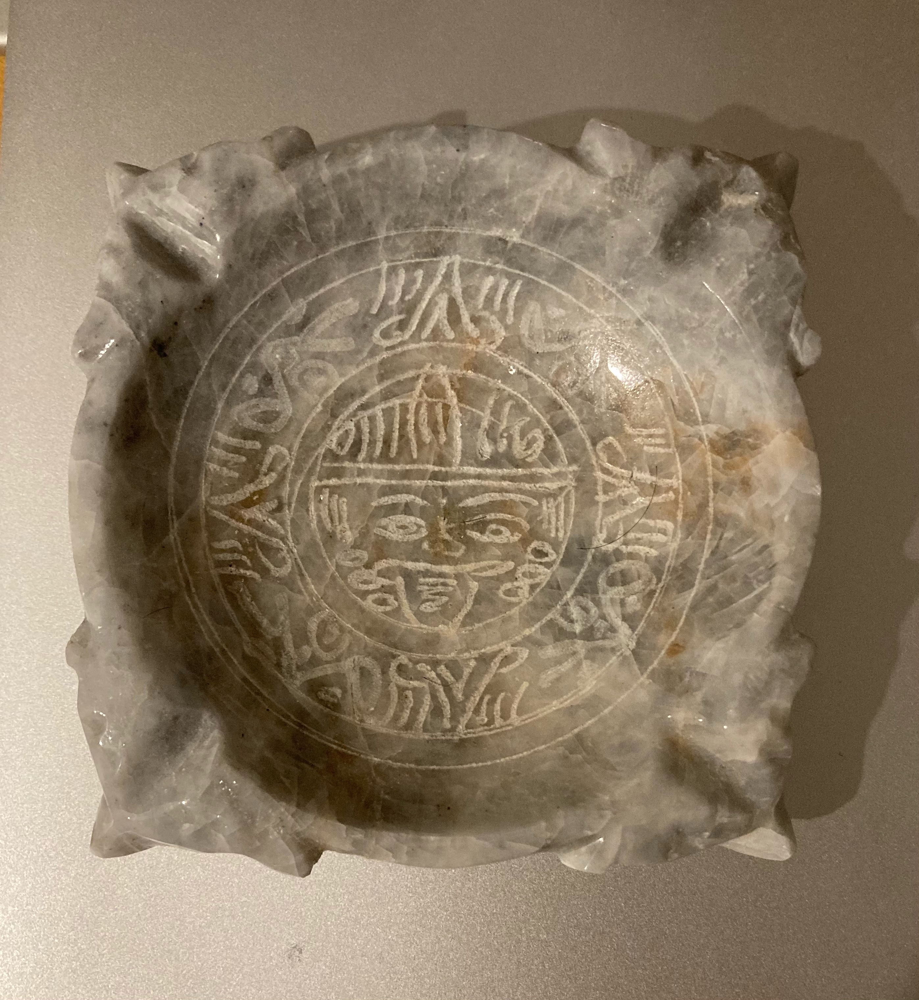

In “Game Design Best Practices”, Amir Dori discusses his tips for game design. Considering UI positions is
essential to any game as it can affect where the user can click. Having buttons in inaccessible locations
will hinder user interaction with your game. Also, sliders are an easy way to show many options to a user
without overwhelming them with information. Indicating to a user that an element is a slider is an important
part of a slider's implementation. Having partly visible items or an animation can further highlight the
slider nature of an element. On the other hand, pop up windows are a good way to display messages to users.
Best practices would include having a transparent background and allowing a “done” button to appear after a
few seconds of delay. Buttons on these popups should be organized with “good” decisions for your app on the
right and “bad” on the left. Monetary incentives could include a watching a video or rating your app for a
reward. This is gives the user a sense of excitement at a reward and continue playing your game.
May 4, 2021
This is an image of a detailed, beautiful bowl. I purchased it in Mexico on the way to see Chichen Itza.
The coloration of the stone initially drew me in. The streaks of brown mixed with white and grey complemented
its overall appearance. The attention to detail is evident as well. Etched in the center is mayan inspired
artwork of Tonatiuh, the sun god. This the face typically found in the center of Mayan calendars. As this
bowl is only 5” x 5”, the quality of etching was impressive to me. This bowl is part of my memento
collection which features items from places I’ve traveled. They are important to me because every time I
use or see the items it reminds of that country and its beauty.

Fig. 1 - taken by Kajal Patel.
This is an image of a cat. He/she has multicolored fur with brown and black stripes. The look
in the cat’s eyes captured by the camera and tail over its paw reflects its familiar relationship to
Hannah. Possibly, someone close to Hannah owns this cat and thus, it is not anxious by her presence.
An interesting aspect of the image is how clearly you can see details. For instance, the fuzzy fur,
definition of the cat’s whiskers, and textures are evident in this photograph. My eyes were immediately
drawn to the cat due to the background being blurry. Thus, the background becomes mysterious as the
attention is on the cat.
Fig. 2 - taken by Hannah Moon.
April 28, 2021
While scrolling through Awwwards.com, I stumbled across Marcus Eriksson’s website, https://themarcus.com/.
His website is both visually appealing and interactive. The main page contains a horizontal auto scrolling
gallery of his photography. Featuring overlapping photos of different sizes, this gallery has a sophisticated
collage feel. Clicking on an image takes the user to a unique page about that project with more information
and images. It is evident throughout the website that Marcus employs a strategic usage of contrast. The extensive
use of contrasting colors is bold but balanced. Achieving this balance by pairing complimentary colors together,
Marcus enhances the photography of each project. The changing of background colors as the user scrolls also hooks
their attention. Ultimately, Marcus’s website takes the user through an unforgettable visual experience of
his work.
April 22, 2021
In “Best Practices for Modals/Overlays/Dialog Windows”, Naema Baskanderi outlines that UI design at its core
needs to be strategic in its purpose. For instance, modal windows only allow user interaction with itself
by pushing the main window to the background. This would be useful when switching focus to a more important
task, highlighting user input, or displaying information that’s not relevant to the general page. In other
situations, overlay windows would hinder a user’s interaction with the page and frankly, confuse them.
Thus, Naema suggests a standard layout to follow to maximize user interest. With a dark background shadow,
title at the top center, button with clear labels, cancel option, and size less than 50% of the screen,
your modal window will maximize user accessibility.
Ultimately, user interaction come down to familiarity with the product. By adhering to this standard
layout and only utilizing modal windows in specific contexts, your window will enhance your website,
not clutter it.
April 14, 2021
When designing a form, its usability should be the focus. Simple, straightforward forms maximize
user response and thus, are crucial for businesses. A key idea is to adopt the “less is more
theory”. In “Best Practices for Form Design”, Salim Ansari suggests that a simple layout,
minimal fields, or short sections aid the user in efficiently finishing a form. Further,
explaining different fields with optional tags, format examples, and top left labels improve
accuracy.
These suggestions are extremely useful when developing your own form. Prioritizing the user
experience allows designers to easily make choices about font, color, and layout. These tips
help to maintain a necessary balance between aesthetics and usability. A website form
exemplifying best practices is Google Forms. The layout is simple and easy to use with minimal
options to alter the overall look of the form. Allowing users to change colors or add a header
picture for the description incorporates design elements without compromising a form’s
integrity. Check out the website here: https://www.google.com/forms/